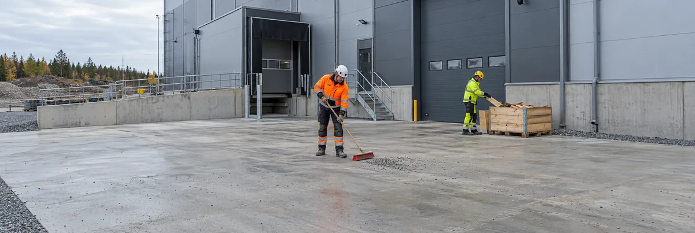

Datakeskustyömaat
Pakkausjätteet pois asennusten tieltä
Laiteasennusten edetessä pakkausmateriaalien määrä kasvaa. Keräämme ja lajittelemme rakennusjätteet sekä pidämme kulkureitit vapaina työmaan puhtausohjeiden mukaan.
Kerro työmaastasi